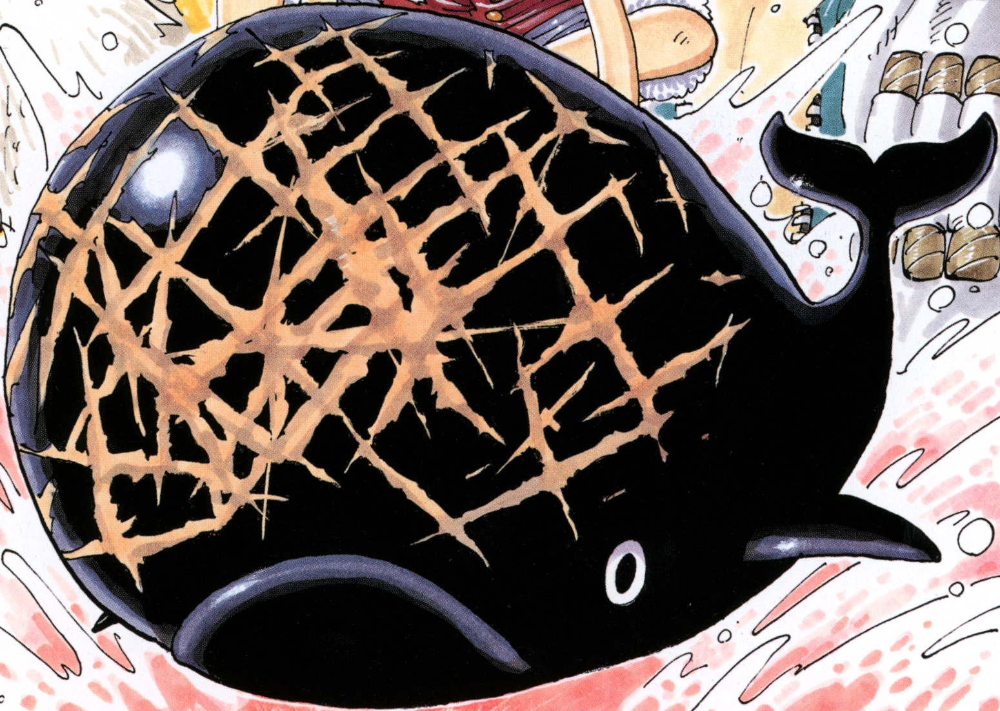

The Straw Hat Pirates make their way to Reverse Mountain and begin the perilous task of scaling its tricky rapids in order to enter the Grand Line. As they descend the mountain, they come face to face with not only the giant whale Laboon, but also mysterious agents Mr. 9 and Miss Wednesday.
A Giant Whale and a Mysterious Duo
As the Straw Hats sail through a storm, Nami realizes that they will be going up Reverse Mountain to access the Grand Line. The crew expresses disbelief at the idea, with Zoro wondering why they can't just go south. Suddenly, the storm stops, and Nami reveals that they are in the Calm Belt, one of two strips of ocean surrounding the Grand Line, where there are no winds or currents. Nami urges the crew to row back to the storm, but the Sea Kings infesting the water then rise up. The Straw Hats struggle to get away, and once they escape, they turn their attention to successfully riding the dangerous current up Reverse Mountain. Their rudder soon breaks, but Luffy shields the Going Merry from hitting the mountain as the Straw Hats successfully sail down into the Grand Line.
When they come down, they immediately run into a giant whale named Laboon, who is blocking their path. The Merry ends up running into the whale, which breaks its masthead. Luffy punches Laboon in the eye in retaliation for his seat being destroyed. Laboon then opens his mouth, swallowing the Going Merry, although Luffy manages to escape. Luffy tries hitting Laboon to get his friends out, but before the whale dives underwater, he spots and enters a trapdoor on the whale's back. Meanwhile, the other Straw Hats find themselves sailing towards an island inside Laboon. They soon encounter a giant squid, which is taken down by a man named Crocus. After an initially tense confrontation, Crocus points them toward an escape route.
Right then, Laboon begins ramming himself into Reverse Mountain, causing further injuries to his head. As this happens, two mysterious people named Mr. 9 and Miss Wednesday prepare to take Crocus out to Laboon and use him to feed the people of their town. However, Luffy is sent tumbling through the corridors by Laboon's thrashing, and he ends up crashing into Mr. 9 and Miss Wednesday, sending them flying into the area where the Straw Hats and Crocus were. Crocus went to calm Laboon down before confronting the two rogues and took two bazooka shots aimed at Laboon as Luffy defeats the rogues. They return to Crocus' island, where Crocus explained about Mr. 9 and Miss Wednesday to the Straw Hats. He then revealed that Laboon had come to the Grand Line with a pirate crew and was asked to stay with him at Reverse Mountain as the crew could not risk taking the whale with them. Over 50 years had passed since then, but Laboon still believed that the crew would come back. The Straw Hats exited Laboon's body and threw Mr. 9 and Miss Wednesday into the water. The two agents swore revenge on the pirates before swimming away. At Twin Cape, Crocus revealed that he had heard that the crew with Laboon had not died, but rather had left the Grand Line. He told this to Laboon, but the whale seemed to refuse to believe him and started ramming his head against Reverse Mountain, as though trying to get to the crew.
Right then, Luffy took the Merry's mast and plunged it into one of Laboon's open wounds, causing the whale to lash out against him. The two traded blows, and Luffy proclaimed that he was now Laboon's rival, promising to see and fight him again once his crew sailed around the Grand Line. This made Laboon happy, and Luffy painted his Jolly Roger on the whale's forehead, telling him not to bash his head against the mountain any longer. Meanwhile, Nami was shocked as her compass stopped working. Crocus tells Nami that to navigate the Grand Line, one would need a Log Pose to chart the differing magnetic fields of each island, all the way to the last island Laugh Tale. Luffy had acquired a Log Pose that Mr. 9 and Miss Wednesday had left on the Merry, but it ended up breaking when he and Sanji got in a fight. However, Crocus agreed to give them a Log Pose out of gratitude for helping Laboon.[
Meanwhile, Mr. 9 and Miss Wednesday swam up to the Twin Cape to try to get their Log Pose back, as they needed to get back to their island and report to their boss before they got into trouble. However, the Unluckies then came to try and kill them. After recovering from the attack, the two rogues went to the Straw Hats and asked them to take them to Whisky Peak. They were unable to divulge their identities, but the Straw Hats reluctantly agreed to help. They then set sail for Whisky Peak, bidding farewell to Crocus and Laboon, and Crocus wondered if Luffy was the one he and Roger had been waiting for